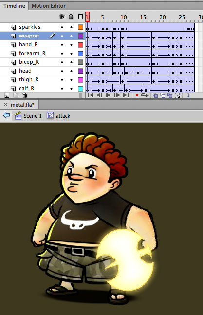
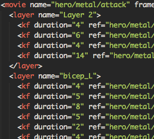
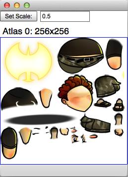
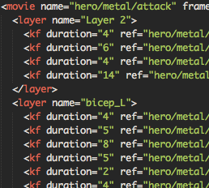

What
Flump converts Flash keyframe animations into texture atlases and XML or JSON that can be easily integrated into any scene graph-based 2D game engine. Flump runtimes exist for a growing number of game engines, including Starling, Sparrow, and Flambe.


Create your animations in Flash

Flump exports texture atlases and XML (or JSON)
Why
Flash CS is a powerful 2D animation tool that everyone knows how to use. But the Flash runtime's proprietary .swf format is not easily parsed, and its vector-based approach to drawing is not performant. Flump allows developers to use a Flash art pipeline without being tied to its runtime.
Who
Flump was created at Three Rings by Charlie Groves, Tim Conkling, and Bruno Garcia. Icon by Jon Demos and Ned Hugar.
Go
- Get the latest stable build of the exporter
- Download or clone the project and check out the examples and demo
- Read the wiki
- Follow me on the twitters